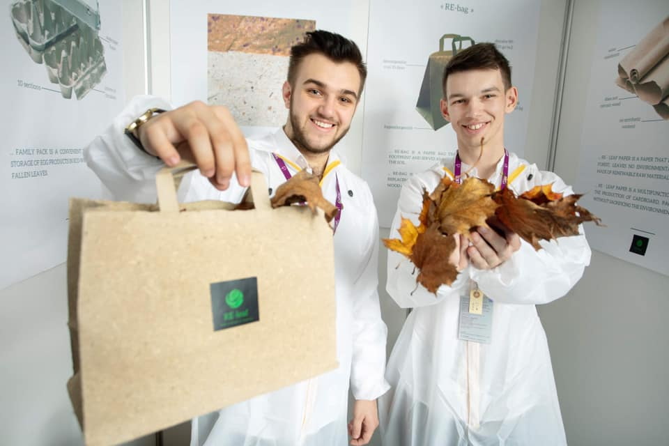
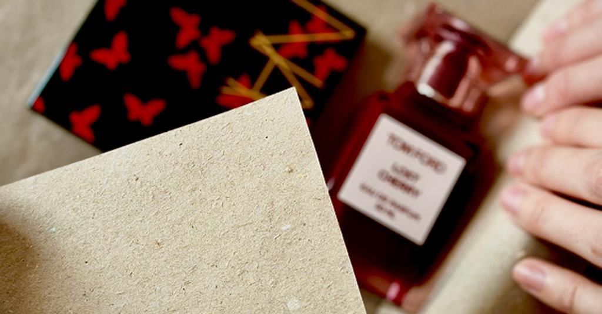
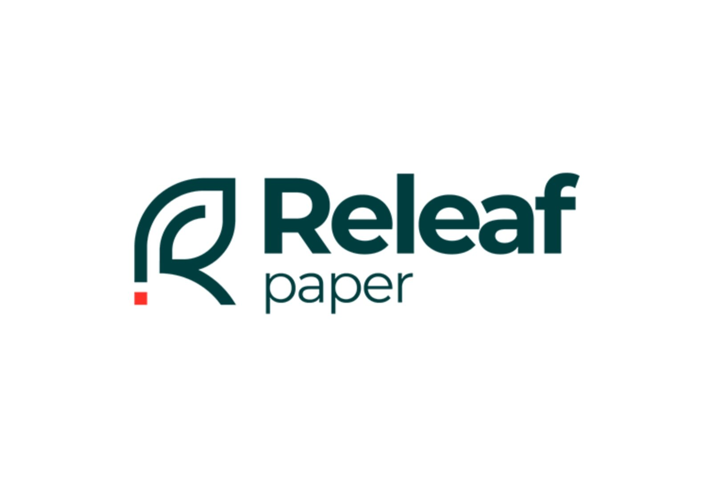

Releaf Paper – українська компанія-виробник паперових виробів з опалого листя, яку у 2020 році створили Олександр Соболенко й Валентин Фречка.
Releaf Paper – заснований у 2020 році український екостартап, основний продукт – папір і паперові пакети, що виготовляються без використання деревини. Технологію виробництва паперу з опалого листя придумав на той час 17-річний школяр із Закарпаття Валентин Фречка. Компанію він запустив із бізнес-партнером Андрієм Варцабою, перші продажі стартували у травні 2021 року.
Серед замовників Releaf Paper в Україні – L’Oreal, Samsung, Weleda, Schneider Electric. У вересні 2022 року стартап запустив продажі у Європі – покупцям відвантажують вироблену в Україні продукцію зі складу у Словаччині.
«В Україні наразі немає складу і немає продажів, ми фактично підтримуємо лише діючих пілотних клієнтів», – каже Соболенко. Обсяги продажів у Європі незначні – наразі Соболенко оцінює їх у «тисячі євро на місяць». Здебільшого це тестові замовлення невеликих партій продукції. Найбільший попит – із Німеччини та Франції. Станом на грудень 2022 року в команді Releaf Paper 10 людей. Наступного року засновники планують подвоїти штат, до середини 2024-го – мати до 35 співробітників.
